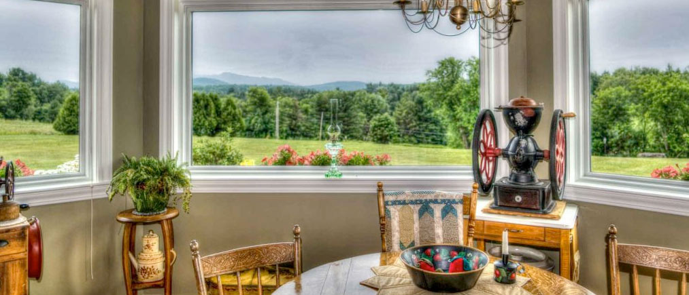

Participants
Many people who require a nursing-home level of care prefer living in the community. We are dedicated to providing quality, individualized services that make community living possible for our participants.
Learn moreVermont Comforts of Home provides opportunities for greater independence.
At some point in our lives, we all need a helping hand. Vermont Comforts of Home believes being in a home environment — surrounded by familiar places and people who care about us — promotes wellness. That is why we provide the support and services you need in a setting that offers the comforts of home.
Let Vermont Comforts of Home use our experience to help you be where you belong.
Vermont Comforts of Home is a non-profit, collaborative program managed and implemented by Lincoln Street, Inc. and Upper Valley Services, Inc. Both agencies have significant experience providing high-quality, individualized home care.
Operating in compliance with the Adult Family Care program under Vermont's Choices for Care initiative, we develop community-based options of care for people requiring a nursing-home level of support. Once you contact us, we'll help determine the services needed and which of our two organizations can best serve you.

Two trusted non-profits, one shared mission. Hover a county to see who serves it — together we cover twelve of Vermont's fourteen counties.
Office in Essex Junction · 802-662-5978
Office in Springfield · 802-886-1833
Many people who require a nursing-home level of care prefer living in the community. We are dedicated to providing quality, individualized services that make community living possible for our participants.
Learn more
We identify skilled people in the community interested in sharing their home and committed to providing the support necessary to keep individuals in the community.
Learn moreOur offices are in several locations across Vermont, and we work to identify the perfect match — in providers and location — for those we serve. Please contact us to learn how we might help you stay in the community, or if you're interested in becoming a home care provider.
Contact us